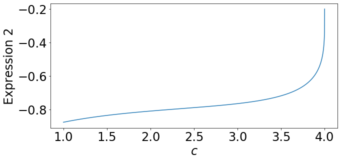

%matplotlib inline
import matplotlib.pyplot as plt
import matplotlib.animation as animation
from IPython.display import HTML
import numpy as np
import numpy.linalg as la
from scipy.integrate import RK45
import sympy as sym
from table_maker import *
from functools import partial
from itertools import *
from math import ceil
import pickle
def cos_bell(x, center=0, width=2*np.pi, height=1):
return (np.cos((x-center)/width*2*np.pi)+1)/2*height * np.heaviside(x-center+width/2,0) * np.heaviside(-x+center+width/2,0)import matplotlib
matplotlib.rcParams.update({'font.size': 24})From Kilpatrick and Bressloff 2010 \[\begin{align*} \mu u_t &= -u + \int_{-\infty}^\infty w(x,x^\prime) q(x^\prime,t) f( u(x^\prime,t) - a(x^\prime,t)) \ dx^\prime \\ q_t &= \frac{1 - q}{\alpha} - \beta q f(u - a) \\ \epsilon a_t &= -a + \gamma f(u - a) \end{align*}\]
Modified version - remove synaptic depression \(q\) \[\begin{align*} \mu u_t &= -u + \int_{-\infty}^\infty w(x,x^\prime) f( u(x^\prime,t) - a(x^\prime,t)) \ dx^\prime \\ \alpha a_t &= -a + \gamma f(u - a) \end{align*}\] (note that parameters have been relabeled)
Traveling pulse solution
Beginning at (Kilpatrick & Bressloff 2010)[https://www.sciencedirect.com/science/article/abs/pii/S0167278909001833] equations 3.30 and 3.31. We will use the same notation they use (i.e. we will use the \(\alpha\) and \(\epsilon\) they use and substitute back to our notation later.
import collections.abc
def collect_eqn(expr, terms):
if not isinstance(terms, collections.abc.Container):
term = terms # isn't a list or tuple
left, right = 0,0
for my_expr in expr.args:
has_term = False
for my_term in sym.postorder_traversal(my_expr):
if term == my_term:
has_term = True
break
if has_term:
left += my_expr
else:
right -= my_expr
return sym.Eq(left, right, evaluate=False)
else: # isn't a list or tuple
left_total, right_total = 0, expr
for term in terms:
left, right = collect_eqn(right_total, term).args
left_total += left
right_total = -right
return sym.Eq(left_total, right_total, evaluate=False)
def my_print(expr):
global eviron_print_tex
if eviron_print_tex:
print('$$' + sym.latex(expr) + '$$')
else:
display(expr)
def batch_print(expr_list, punctuation='.'):
global eviron_print_tex
if eviron_print_tex:
print_str = '$$\\begin{align*}\n'
for expr in expr_list:
print_str += '\t' + sym.latex(expr).replace('=','&=') + '\\\\\n'
# remove last new-line and add ending puncuation
print_str = print_str[:-3] + punctuation + '\n'
print_str += '\\end{align*}$$'
print(print_str)
else:
for expr in expr_list:
display(expr)
def py_code(expr, replace_numpy=True, replace_unicode=True, numpy_package='np.'):
code = sym.ccode(expr)
if replace_unicode:
unicode_replacements = [
('\\alpha', 'α'),
('\\beta', 'β'),
('\\gamma', 'γ'),
('\\Gamma', 'Γ'),
('\\delta', 'δ'),
('\\Delta', 'Δ'),
('\\epsilon', 'ϵ'),
('\\zeta', 'ζ'),
('\\eta', 'η'),
('\\theta', 'θ'),
]
for unicode, symbol in unicode_replacements:
code = code.replace(unicode, symbol)
if replace_numpy:
numpy_replacements = [
('exp', numpy_package + 'exp'),
('log', numpy_package + 'log'),
('pow', '( lambda base, exponent: base**exponent )')
]
for c_func, np_func in numpy_replacements:
code = code.replace(c_func, np_func)
return code# eviron_print_tex = True
eviron_print_tex = False
c, Δ, α, β, ϵ, γ, θ = sym.symbols('c \\Delta \\alpha \\beta \\epsilon \\gamma \\theta', real=True)
one_plus = 1+α*β
cα = c*α
K0 = (c*α + 1)/( 2*(c+1)*(cα + one_plus) )
K1 = 1/ (2*(c+1)*one_plus)
K2 = β*c*α**2 / ( 2 * (c+1) * one_plus * (c*α + one_plus) )
L0 = (2*c+1) / 2 / (c+1) / one_plus - γ
L1 = (c*α - 1) / ( 2 * (c-1) * (cα - one_plus) )
L2 = β*c**2*α**4 / one_plus / (cα**2 - one_plus**2) / (α - one_plus) - β*c*α**2 / 2 / (c+1) / one_plus / (cα + one_plus)
L3 = 1/one_plus * ( 1 + β*c**2*α**4 / (cα**2 - one_plus**2) / (α - one_plus) ) + (cα**2*(1+β) - one_plus) / (c**2 - 1) / (cα**2 - one_plus**2)
# symbolic values for printing purposes
symK0, symK1, symK2, symL0, symL1, symL2, symL3 = sym.symbols('K_0 K_1 K_2 L_0 L_1 L_2 L_3')
expr1 = -θ + symK0 - symK1*sym.exp(-Δ) - symK2*sym.exp(-one_plus*Δ/cα)*sym.exp(-Δ)
expr2 = -θ + symL0 + symL1*sym.exp(-Δ) + symL2*sym.exp(-one_plus*Δ/cα) - symL3*sym.exp(-Δ/c) + γ*sym.exp(-Δ/(c*ϵ))
sym_pairs = [[0, expr1], [0, expr2], [symK0, K0], [symK1, K1], [symK2, K2], [symL0, L0], [symL1, L1], [symL2, L2], [symL3, L3]]
print('We begin with')
batch_print([ sym.Eq(symvar, var) for symvar, var in sym_pairs ])
print('Then set $\\beta=0$ to obtain')
sub_var , sub_to = β, 0
K0 = sym.simplify(K0.subs(sub_var, sub_to))
K1 = K1.subs(sub_var, sub_to)
K2 = K2.subs(sub_var, sub_to)
L0 = L0.subs(sub_var, sub_to)
L1 = L1.subs(sub_var, sub_to)
L2 = L2.subs(sub_var, sub_to)
L3 = L3.subs(sub_var, sub_to)
expr1 = expr1.subs(sub_var, sub_to)
expr2 = expr2.subs(sub_var, sub_to)
sym_pairs = [[0, expr1], [0, expr2], [symK0, K0], [symK1, K1], [symK2, K2], [symL0, L0], [symL1, L1], [symL2, L2], [symL3, L3]]
batch_print([ sym.Eq(symvar, var) for symvar, var in sym_pairs ])
print('Substituting, we find')
for var, val in sym_pairs[2:]:
expr1 = expr1.subs(var, val)
expr2 = expr2.subs(var, val)
expr2 = sym.simplify(sym.expand(expr2))
expr2 = expr2.collect(sym.exp(-Δ/(ϵ*c))).collect(sym.exp(-Δ)).collect(γ).collect(c)
sym_pairs = [[0, expr1], [0, expr2], [symK0, K0], [symK1, K1], [symK2, K2], [symL0, L0], [symL1, L1], [symL2, L2], [symL3, L3]]
batch_print([ sym.Eq(symvar, var) for symvar, var in sym_pairs[:2] ])
print('Solving the first equation for $e^{-\\Delta}$ and substituting, we obtain')
E_sub = sym.solve(expr1, sym.exp(-Δ))[0]
assert (E_sub - sym.exp(-Δ)) - (expr1*2*(c+1)).simplify() == 0 #expr1=0 so expr1*2*(c+1)=0
expr2 = expr2.subs(sym.exp(-Δ), E_sub).subs(sym.exp(-Δ/c), E_sub**(1/c)).subs(sym.exp(-Δ/(ϵ*c)), E_sub**(1/(ϵ*c)))
batch_print([ sym.Eq(sym.exp(-Δ), E_sub), sym.Eq(0, expr2)])
print('Rearranging, we arrive at a one-dimensional root finding problem for $c$, and some simple substitution for $\\Delta$')
temp = (1 - 2*θ*(c+1))
expr3 = γ*(temp**(1/(ϵ*c)) - 1) + (- 2*θ*c + c**2*(1-2*θ - temp**(1/(c))) ) / (c**2 - 1)
assert (expr2 - expr3).simplify() == 0
expr2 = expr3
# Δ_sub = sym.solve(expr1, Δ)[0]
Δ_sub = sym.log(1/(1 - 2*θ*(c+1))) # sympy is having trouble verifying log identities
batch_print([ sym.Eq(Δ, Δ_sub), sym.Eq(0, expr2) ])
print('Converting to our parameter naming conventions $\\epsilon \\to 1/\\alpha$ we have')
expr2 = expr2.subs(ϵ, 1/α)
batch_print([ sym.Eq(Δ, Δ_sub), sym.Eq(0, expr2) ])We begin with\(\displaystyle 0 = K_{0} - K_{1} e^{- \Delta} - K_{2} e^{- \Delta} e^{\frac{\Delta \left(- \alpha \beta - 1\right)}{\alpha c}} - \theta\)
\(\displaystyle 0 = L_{0} + L_{1} e^{- \Delta} + L_{2} e^{\frac{\Delta \left(- \alpha \beta - 1\right)}{\alpha c}} - L_{3} e^{- \frac{\Delta}{c}} + \gamma e^{- \frac{\Delta}{\epsilon c}} - \theta\)
\(\displaystyle K_{0} = \frac{\alpha c + 1}{\left(2 c + 2\right) \left(\alpha \beta + \alpha c + 1\right)}\)
\(\displaystyle K_{1} = \frac{1}{\left(2 c + 2\right) \left(\alpha \beta + 1\right)}\)
\(\displaystyle K_{2} = \frac{\alpha^{2} \beta c}{\left(2 c + 2\right) \left(\alpha \beta + 1\right) \left(\alpha \beta + \alpha c + 1\right)}\)
\(\displaystyle L_{0} = - \gamma + \frac{c + \frac{1}{2}}{\left(c + 1\right) \left(\alpha \beta + 1\right)}\)
\(\displaystyle L_{1} = \frac{\alpha c - 1}{\left(2 c - 2\right) \left(- \alpha \beta + \alpha c - 1\right)}\)
\(\displaystyle L_{2} = \frac{\alpha^{4} \beta c^{2}}{\left(\alpha \beta + 1\right) \left(\alpha^{2} c^{2} - \left(\alpha \beta + 1\right)^{2}\right) \left(- \alpha \beta + \alpha - 1\right)} - \frac{\alpha^{2} \beta c}{2 \left(c + 1\right) \left(\alpha \beta + 1\right) \left(\alpha \beta + \alpha c + 1\right)}\)
\(\displaystyle L_{3} = \frac{\frac{\alpha^{4} \beta c^{2}}{\left(\alpha^{2} c^{2} - \left(\alpha \beta + 1\right)^{2}\right) \left(- \alpha \beta + \alpha - 1\right)} + 1}{\alpha \beta + 1} + \frac{\alpha^{2} c^{2} \left(\beta + 1\right) - \alpha \beta - 1}{\left(c^{2} - 1\right) \left(\alpha^{2} c^{2} - \left(\alpha \beta + 1\right)^{2}\right)}\)
Then set $\beta=0$ to obtain\(\displaystyle 0 = K_{0} - K_{1} e^{- \Delta} - K_{2} e^{- \Delta} e^{- \frac{\Delta}{\alpha c}} - \theta\)
\(\displaystyle 0 = L_{0} + L_{1} e^{- \Delta} + L_{2} e^{- \frac{\Delta}{\alpha c}} - L_{3} e^{- \frac{\Delta}{c}} + \gamma e^{- \frac{\Delta}{\epsilon c}} - \theta\)
\(\displaystyle K_{0} = \frac{1}{2 \left(c + 1\right)}\)
\(\displaystyle K_{1} = \frac{1}{2 c + 2}\)
\(\displaystyle K_{2} = 0\)
\(\displaystyle L_{0} = - \gamma + \frac{c + \frac{1}{2}}{c + 1}\)
\(\displaystyle L_{1} = \frac{1}{2 c - 2}\)
\(\displaystyle L_{2} = 0\)
\(\displaystyle L_{3} = 1 + \frac{1}{c^{2} - 1}\)
Substituting, we find\(\displaystyle 0 = - \theta - \frac{e^{- \Delta}}{2 c + 2} + \frac{1}{2 \left(c + 1\right)}\)
\(\displaystyle 0 = \gamma \left(-1 + e^{- \frac{\Delta}{\epsilon c}}\right) - \theta + \frac{c}{c + 1} - e^{- \frac{\Delta}{c}} - \frac{1}{c^{2} e^{\frac{\Delta}{c}} - e^{\frac{\Delta}{c}}} + \frac{e^{- \Delta}}{2 c - 2} + \frac{1}{2 \left(c + 1\right)}\)
Solving the first equation for $e^{-\Delta}$ and substituting, we obtain\(\displaystyle e^{- \Delta} = - 2 \theta c - 2 \theta + 1\)
\(\displaystyle 0 = \gamma \left(\left(- 2 \theta c - 2 \theta + 1\right)^{\frac{1}{\epsilon c}} - 1\right) - \theta + \frac{c}{c + 1} - \left(- 2 \theta c - 2 \theta + 1\right)^{\frac{1}{c}} - \frac{1}{c^{2} \left(- 2 \theta c - 2 \theta + 1\right)^{- \frac{1}{c}} - \left(- 2 \theta c - 2 \theta + 1\right)^{- \frac{1}{c}}} + \frac{- 2 \theta c - 2 \theta + 1}{2 c - 2} + \frac{1}{2 \left(c + 1\right)}\)
Rearranging, we arrive at a one-dimensional root finding problem for $c$, and some simple substitution for $\Delta$\(\displaystyle \Delta = \log{\left(\frac{1}{- 2 \theta \left(c + 1\right) + 1} \right)}\)
\(\displaystyle 0 = \gamma \left(\left(- 2 \theta \left(c + 1\right) + 1\right)^{\frac{1}{\epsilon c}} - 1\right) + \frac{- 2 \theta c + c^{2} \left(- 2 \theta - \left(- 2 \theta \left(c + 1\right) + 1\right)^{\frac{1}{c}} + 1\right)}{c^{2} - 1}\)
Converting to our parameter naming conventions $\epsilon \to 1/\alpha$ we have\(\displaystyle \Delta = \log{\left(\frac{1}{- 2 \theta \left(c + 1\right) + 1} \right)}\)
\(\displaystyle 0 = \gamma \left(\left(- 2 \theta \left(c + 1\right) + 1\right)^{\frac{\alpha}{c}} - 1\right) + \frac{- 2 \theta c + c^{2} \left(- 2 \theta - \left(- 2 \theta \left(c + 1\right) + 1\right)^{\frac{1}{c}} + 1\right)}{c^{2} - 1}\)
code = 'def delta_from_c(c, θ=0.1):\n\treturn ' + py_code(Δ_sub)
print(code.replace('\t',' '*4))
code = 'def c_implicit(c, γ, α, θ=0.1):\n\treturn ' + py_code(expr2)
print(code.replace('\t',' '*4))
code = 'def c_implicit_derivative(c, γ, α, θ=0.1):\n\treturn ' + py_code(expr2.diff(c))
print(code.replace('\t',' '*4))def delta_from_c(c, θ=0.1):
return np.log(1.0/(-2*θ*(c + 1) + 1))
def c_implicit(c, γ, α, θ=0.1):
return γ*(( lambda base, exponent: base**exponent )(-2*θ*(c + 1) + 1, α/c) - 1) + (-2*θ*c + ( lambda base, exponent: base**exponent )(c, 2)*(-2*θ - ( lambda base, exponent: base**exponent )(-2*θ*(c + 1) + 1, 1.0/c) + 1))/(( lambda base, exponent: base**exponent )(c, 2) - 1)
def c_implicit_derivative(c, γ, α, θ=0.1):
return γ*( lambda base, exponent: base**exponent )(-2*θ*(c + 1) + 1, α/c)*(-2*α*θ/(c*(-2*θ*(c + 1) + 1)) - α*np.log(-2*θ*(c + 1) + 1)/( lambda base, exponent: base**exponent )(c, 2)) - 2*c*(-2*θ*c + ( lambda base, exponent: base**exponent )(c, 2)*(-2*θ - ( lambda base, exponent: base**exponent )(-2*θ*(c + 1) + 1, 1.0/c) + 1))/( lambda base, exponent: base**exponent )(( lambda base, exponent: base**exponent )(c, 2) - 1, 2) + (-2*θ - ( lambda base, exponent: base**exponent )(c, 2)*( lambda base, exponent: base**exponent )(-2*θ*(c + 1) + 1, 1.0/c)*(-2*θ/(c*(-2*θ*(c + 1) + 1)) - np.log(-2*θ*(c + 1) + 1)/( lambda base, exponent: base**exponent )(c, 2)) + 2*c*(-2*θ - ( lambda base, exponent: base**exponent )(-2*θ*(c + 1) + 1, 1.0/c) + 1))/(( lambda base, exponent: base**exponent )(c, 2) - 1)def delta_from_c(c, θ=0.1):
return np.log(1.0/(-2*θ*(c + 1) + 1))
def c_implicit(c, γ, α, θ=0.1):
return γ*(( lambda base, exponent: base**exponent )(-2*θ*(c + 1) + 1, α/c) - 1) + (-2*θ*c + ( lambda base, exponent: base**exponent )(c, 2)*(-2*θ - ( lambda base, exponent: base**exponent )(-2*θ*(c + 1) + 1, 1.0/c) + 1))/(( lambda base, exponent: base**exponent )(c, 2) - 1)
def c_implicit_derivative(c, γ, α, θ=0.1):
return γ*( lambda base, exponent: base**exponent )(-2*θ*(c + 1) + 1, α/c)*(-2*α*θ/(c*(-2*θ*(c + 1) + 1)) - α*np.log(-2*θ*(c + 1) + 1)/( lambda base, exponent: base**exponent )(c, 2)) - 2*c*(-2*θ*c + ( lambda base, exponent: base**exponent )(c, 2)*(-2*θ - ( lambda base, exponent: base**exponent )(-2*θ*(c + 1) + 1, 1.0/c) + 1))/( lambda base, exponent: base**exponent )(( lambda base, exponent: base**exponent )(c, 2) - 1, 2) + (-2*θ - ( lambda base, exponent: base**exponent )(c, 2)*( lambda base, exponent: base**exponent )(-2*θ*(c + 1) + 1, 1.0/c)*(-2*θ/(c*(-2*θ*(c + 1) + 1)) - np.log(-2*θ*(c + 1) + 1)/( lambda base, exponent: base**exponent )(c, 2)) + 2*c*(-2*θ - ( lambda base, exponent: base**exponent )(-2*θ*(c + 1) + 1, 1.0/c) + 1))/(( lambda base, exponent: base**exponent )(c, 2) - 1)
# Testing
print(delta_from_c(2))
print(c_implicit(3,4,5))0.9162907318741552
-3.5593078396296236γ = 1
α = 5
θ = .1
c_max = 1/(2*θ) - 1
cs = np.linspace(1+1e-10, c_max, 2001)
plt.figure(figsize=(10,5))
plt.plot(cs, c_implicit(cs, γ, α, θ))
plt.xlabel('$c$')
plt.ylabel('Expression 2')
plt.tight_layout()
# plt.savefig('../reports/report20210527/rootfinding.png')
plt.show()
Inconsistent
# parameters chosen/measured from simulation
Δ, c, γ, α, θ = pickle.load(open('parameters.pickle', 'rb'))
β = 0
ϵ = 1/α
# α = 1
one_plus = 1+α*β
cα = c*α
K0 = (c*α + 1)/( 2*(c+1)*(cα + one_plus) )
K1 = 1/ (2*(c+1)*one_plus)
K2 = β*c*α**2 / ( 2 * (c+1) * one_plus * (c*α + one_plus) )
L0 = (2*c+1) / 2 / (c+1) / one_plus - γ
L1 = (c*α - 1) / ( 2 * (c-1) * (cα - one_plus) )
L2 = β*c**2*α**4 / one_plus / (cα**2 - one_plus**2) / (α - one_plus) - β*c*α**2 / 2 / (c+1) / one_plus / (cα + one_plus)
L3 = 1/one_plus * ( 1 + β*c**2*α**4 / (cα**2 - one_plus**2) / (α - one_plus) ) + (cα**2*(1+β) - one_plus) / (c**2 - 1) / (cα**2 - one_plus**2)
expr1 = -θ + K0 - K1*sym.exp(-Δ) - K2*sym.exp(-one_plus*Δ/cα)*sym.exp(-Δ)
expr2 = -θ + L0 + L1*sym.exp(-Δ) + L2*sym.exp(-one_plus*Δ/cα) - L3*sym.exp(-Δ/c) + γ*sym.exp(-Δ/(c*ϵ))
print('0 = %g' % expr1)
print('0 = %g' % expr2)
print('Appears inconsistent')0 = 0.00154503
0 = -0.201793
Appears inconsistent